|
Calligraphy exhibit - awesome writing. |
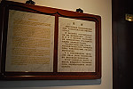
Although it is hard to see, this explanation, like all of them in the museum, are written in English and Chinese. |
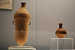
Another exhibit was of pottery - a rich collection |
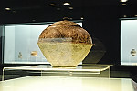
Look at the intricate design. |
|
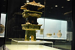
Not sure if this was a decorative piece or a serving vessel. |
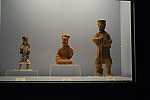
Pottery figures were plentiful. |
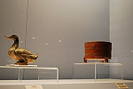
Animals were commonly made from clay, painted, and glazed. |
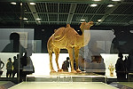
A camel in great detail. |
|
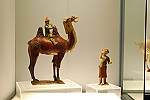
Another camel - almost a comic one with the little rider. |
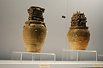
Very detailed and complicated tops to these vessels. |
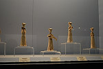
Figurines of noble women. |
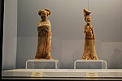
Close up of two of the women. |